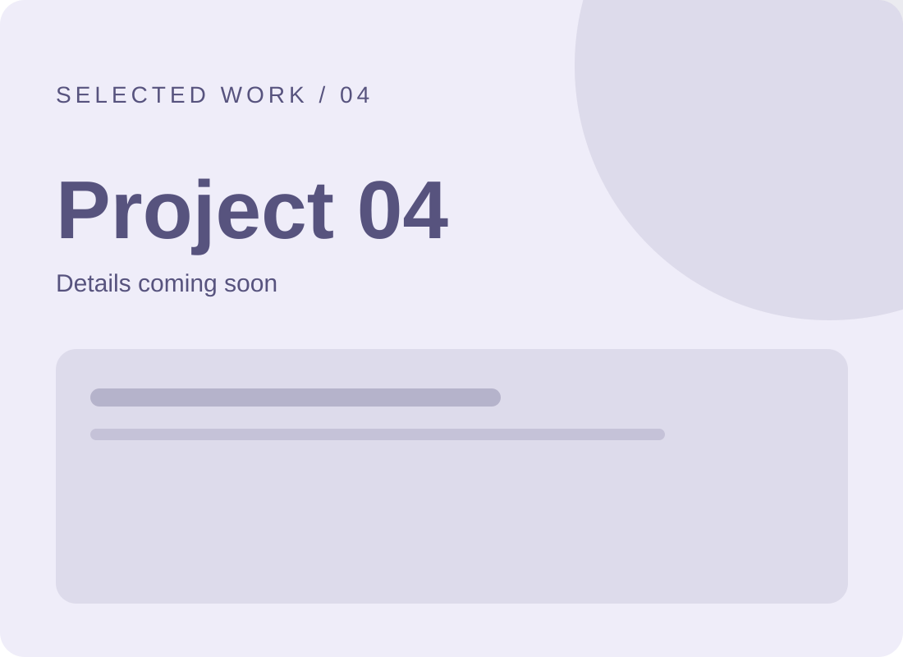

UHD Extension + Course Planner
Two tools I'm building for students at the University of Houston–Downtown: a browser extension for planning your week, and a visual map of your degree.

- Type
- Browser extension and web app
- Built with
- TypeScript, React, Vite
- Status
- Planner live; extension in development
Course Planner
LiveA visual planner for UHD's 2025–2026 degree plans. It lays out the required courses as a map, with arrows showing which classes unlock which, so you can see the path to graduation at a glance.
- Covers the Computer Science, Mathematics, Chemistry, and Biology BS plans, with optional Mathematics and Data Science minors.
- Drag branches around, mark the courses you've already taken, and undo or redo changes.
- Shows your credit totals and exports the whole plan as a PNG image.
- Plans are saved only in your own browser. Nothing is uploaded.
It's an independent student project and not an official UHD degree audit, so always confirm your plan with an advisor.
UHD Student Extension
In developmentA Chrome and Edge extension that brings planning tools into the browser. The current build includes:
- A weekly timetable: add course cards and meeting times, see them on a grid, and get a warning when classes overlap.
- Backup and import of your timetable as a JSON file.
- A preview of professor profile links.
- A shortcut to the Course Planner from the extension's dashboard.
Professor ratings and opt-in enrollment help are planned next. The extension only asks for the browser's storage permission.